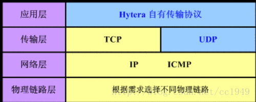
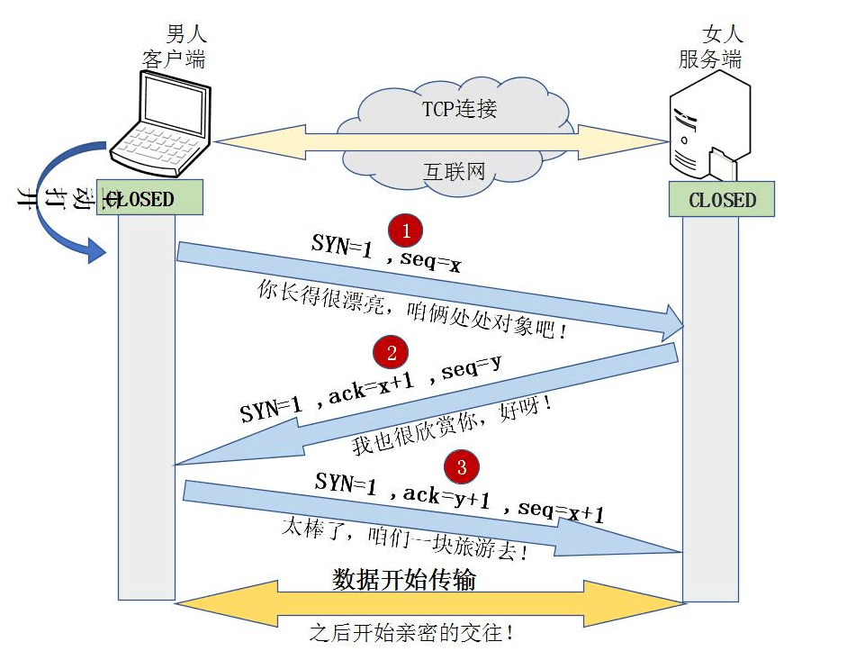
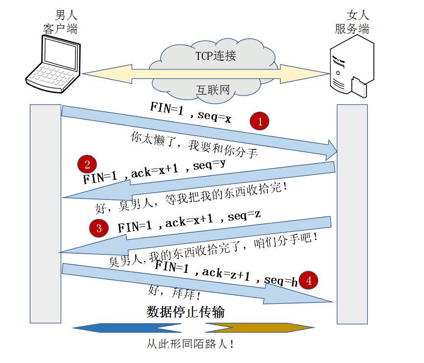
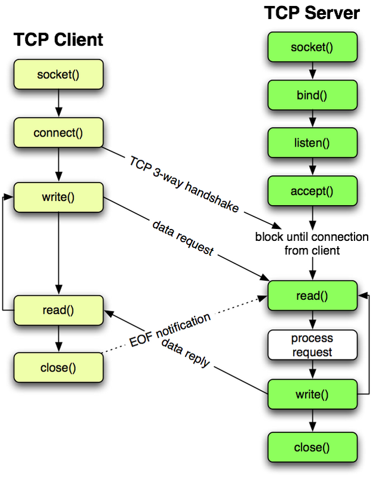
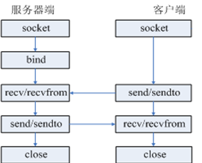

计算机之间的通信，三次握手，四次挥手！TCP/UDP协议！
17 网络编程
一、网络编程
1.网络编程基础
计算机网络：把分布在不同区域的计算机通过专门的设备使用通信线路连接起来，从而会形成一个庞大的网络系统，不同的计算机之间就可以进行信息的传递
网络编程：在同一个网络中不同的机器之间进行通信
2.计算机之间需要通信的条件
三要素：ip地址，端口，协议
2.1 ip地址
概念
互联网地址（Internet Protocol Address），是联网设备和互联网之间的唯一标识，在同一个网段中，ip地址是唯一的 ip地址是数字型的，是一个32位整数，通常将其分为4个8位的二进制，每8位用圆点隔开，并且将8位的二进制转换为0~255之间的十进制，例如：10.0.127.108分类
形式分类： ipv4:由4个字节组成，分成4段 ipv6:由6个字节组成，分为6段 功能分类： A类：保留给政府机构，1.0.0.1~126.255.255.254 B类：分配给中小型企业，128.1.0.1-191.255.255.254 C类：分配给任何需要的个人，192.0.1.1-223.255.255.254 D类：用于组播【一种数据传输方式】，224.0.0.1-239.255.255.254 E类：用于实验，240....~255..... 127.0.0.1 回送地址，一般指的是本机的ip，localhost，一般用于测试总结：ip地址可以唯一的确定网络上一个通信实体，但是一个通信实体可以有多个应用程序同时提供网络服务，此时还需要端口
2.2端口
1>概念
数据的发送和接收都需要通过端口出入计算机，端口号是唯一标识通信实体上的应用程序
注意：同一台机器上不能两个程序占用同一个端口，端口号：0~65535
2>分类
a.公认端口：0~1023
b.注册端口：1025~49151
c.动态端口或者私有端口：1024~65535
3>常用的端口
mysql:3306
oracle:1521
tomcat:8080
qq:4000
2.3网络协议
网络协议：只要连接到网络的设备，相互之间遵循同一种网络协议，才能够进行数据交互

3.TCP/IP协议
互联网协议，负责两台计算机之间建立可靠的【保证数据安全到达对方】，可连接【面向连接，三次握手】的通信
4.TCP协议
4.1概念
Transimission Control Protocol ,传输控制协议，基于字节的传输层通信协议
特点：
a.安全的【确保接收方完全正确的获取发送方发送的全部数据】
b.面向连接的【数据传输必须要建立连接，连接的过程中需要时间】
c.数据传输的效率较低
d.传输的数据的大小有限制，一旦连接建立，双方可以通过指定的格式发送数据
面向连接：三次握手
a.客户端向服务端发送一个请求 b.服务端收到请求之后，回客户端一个响应 c.客户端收到服务端的响应之后，回复给服务端一个确认信息
- 四次挥手
- （1） TCP客户端发送一个FIN，用来关闭客户到服务器的数据传送。
- （2） 服务器收到这个FIN，它发回一个ACK，确认序号为收到的序号加1。和SYN一样，一个FIN将占用一个序号。
- （3） 服务器关闭客户端的连接，发送一个FIN给客户端。
- （4） 客户端发回ACK报文确认，并将确认序号设置为收到序号加1。

说明：
使用tcp来实现数据的发送和接收需要发送方和接收方，但是两个通信实体之间没有明确的客户端和服务端之分，在两个通信实体建立连接之前，必须有一个通信实体做出主动姿态，被称为客户端
4.2 Socket通信
Socket是应用层与TCP/IP协议族通信的中间软件抽象层，它是一组接口。在设计模式中，Socket其实就是一个门面模式，它把复杂的TCP/IP协议族隐藏在Socket接口后面，对用户来说，一组简单的接口就是全部，让Socket去组织数据，以符合指定的协议。Socket:套接字，作用：可以发送和接收数据
Socket必须知道目标计算机的ip地址，端口号，指定协议类型【TCP】

注意：
a.同一个端口号，如果被一个socket绑定之后，则其他的socket将不能再绑定
b.tcp创建连接的是双向通道，谁先发消息，则默认为是客户端，另外一方位服务端
5.UDP协议
User Datagram Protocol,用户数据包协议，提供面向无连接的不可靠的信息传输服务
特点：
a.不安全【发送方只负责将信息发送出去，数据能不能到达对方，或者到达对方的信息是否正确，都不做任何保证】
b.无连接的【进行信息发送之前，无需进行发送方和接收方之间的连接】
c.速度快
d.大小是有限制的，每个数据包的大小必须限制在64k以内

二、高阶函数
如果一个函数的参数是另外一个函数，那么这个函数就可以称为高阶函数
2.1 map
map是系统内置函数，map函数接收两个参数，一个是函数，一个是可迭代对象(Iterable)，map将传入的函数依次作用到序列的每个元素，并把结果作为新的Iterator返回。
1 | """ |
2.2 reduce
reduce()函数也是functools模块中的一个高阶函数。需要引入functools模块才能使用。
1 | ''' |
2.3 filter
filter是内建函数，可以对可迭代对象进行过滤，去除不满足条件的元素
1 | filter(function, iterable) |
2.4 sorted
sorted是内建函数，用于对有序序列进行排序，生成一个新序列
1 | sorted(iterable[, key=None][, reverse=False]) |